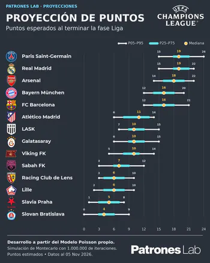
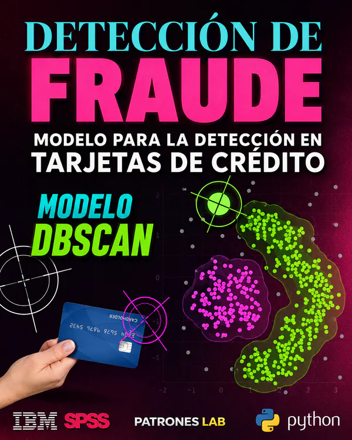
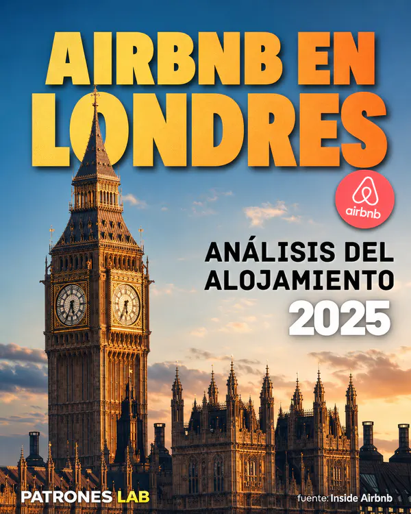

Champions League 2026/27 · Puntenprognose
Puntenprognose aan het einde van de competitiefase met Poisson en Monte Carlo, met de mediaan en de percentielintervallen 25–75 en 5–95.
Publicatie bekijken ↗
Puntenprognose aan het einde van de competitiefase met Poisson en Monte Carlo, met de mediaan en de percentielintervallen 25–75 en 5–95.
Publicatie bekijken ↗
Ontwikkeling van de voorspelde eindposities tot en met speelronde 3, op basis van een miljoen simulaties met Poisson en Monte Carlo.
Publicatie bekijken ↗
Heatmap van de voorspelde eindposities van LaLiga-teams op basis van een miljoen Monte Carlo-simulaties.
Publicatie bekijken ↗
Simulatie met Poisson en Monte Carlo om de kansen op de top 8, play-offs en uitschakeling in de Champions League te schatten.
Publicatie bekijken ↗
Vergelijking van Elo-rating, voorspelde punten en de spreiding van gesimuleerde uitkomsten per team.
Publicatie bekijken ↗
Histogrammen van gesimuleerde punten om de meest voorkomende uitkomsten van de competitie te onderzoeken.
Publicatie bekijken ↗
Vergelijking van eindposities met percentielen om de meest waarschijnlijke bandbreedte van uitkomsten te laten zien.
Publicatie bekijken ↗
Toelichting op het Poissonmodel en de Monte Carlo-simulatie om uitslagen en de rangschikking te schatten.
Publicatie bekijken ↗
LinkedIn-publicatie over simulaties. De precieze inhoud moet nog worden geverifieerd.
Publicatie bekijken ↗
Ontwikkeling van de geschatte posities van de landenteams gedurende de speelronden van de competitie.
Publicatie bekijken ↗
Doelpuntenmodel met Poisson en Monte Carlo-simulatie om Champions League-uitslagen te voorspellen.
Project in ontwikkeling bekijken ↗
Vergelijking van de Elo-rating en de geschatte kans op het winnen van de Nations League per landenteam.
Publicatie bekijken ↗
Kansen op doorgang naar de verschillende fasen van de competitie, van de groepsfase tot de finale.
Publicatie bekijken ↗
Toelichting op het simulatiemodel voor het analyseren van kansen in de UEFA Nations League.
Publicatie bekijken ↗
Analyse van de luchtvaartactiviteit op de Balearen met openbare data van AENA.
Publicatie bekijken ↗
Simulatie van kansen op groepswinst, doorgang in de knock-outfase en het behalen van de titel.
Project bekijken ↗
Bijgewerkte kansen op eindposities met nieuwe uitslagen en Elo-ratings.
Publicatie bekijken ↗
Publicatie over de simulatie van LaLiga 2026/27. Details moeten nog worden geverifieerd.
Publicatie bekijken ↗
Simulatie van scenario's om de kansen op posities en eindresultaten van LaLiga te schatten.
Project in ontwikkeling bekijken ↗
Publicatie over scenario's voor LaLiga 2026/27. Details moeten nog worden geverifieerd.
Publicatie bekijken ↗
Toepassing van DBSCAN om clusters en afwijkende transacties te herkennen in transactiedata.
Publicatie bekijken ↗
Verkenning van taxiritten in Chicago om patronen in tijd, locatie en kosten te herkennen.
Publicatie bekijken ↗
Classificatiemodel voor het analyseren van transacties en signalen die samenhangen met fraude.
Publicatie bekijken ↗
Een kennismaking met Patrones Lab en zijn projecten rond data-analyse, modellen en visualisaties.
Publicatie bekijken ↗
Model dat classificatietechnieken vergelijkt om economische schade door weersverschijnselen te onderzoeken.
Project in ontwikkeling bekijken ↗
Dashboard voor leveranciersuitgaven om ontwikkelingen, categorieën en geografische spreiding te verkennen.
Project bekijken ↗
Dashboard met Spotify-ranglijsten voor het analyseren van streams, ontwikkelingen en spreiding per land.
Project in ontwikkeling bekijken ↗
Bijgewerkte kansen op het winnen van het WK en mogelijke ontmoetingen in de finale.
Publicatie bekijken ↗
Simulatie van kwartfinale-ontmoetingen en kansen op doorgang in het WK-schema.
Publicatie bekijken ↗
Schatting van de kansen op het bereiken van de halve finale, het spelen van de finale en het winnen van het WK.
Publicatie bekijken ↗
Bijgewerkte kansen op doorgang en de titel na de zestiende finales.
Publicatie bekijken ↗
Prognose van doorgangskansen per ronde op basis van de op dat moment beschikbare uitslagen.
Publicatie bekijken ↗
Simulatiemodel om de kansen op doorgang en de titel voor elk landenteam te schatten.
Project bekijken ↗
Vergelijking van Argentijnse spelers aan de hand van percentielen per positie en statistieken per 90 minuten.
Publicatie bekijken ↗
Visuele vergelijking van individuele prestaties op het WK in Qatar met percentielenradars.
Project bekijken ↗
Analyse van hoe acties aan de bal de dreiging veranderden in de finale tussen Argentinië en Frankrijk.
Publicatie bekijken ↗Artikel over voetbal en kansen in de wedstrijd Argentinië–Frankrijk op het WK Qatar 2022.
Artikel lezen ↗
Kansmodel om de scoringskans van elk schot op het WK in Qatar te schatten.
Project bekijken ↗Analyse van de dreiging die acties aan de bal opleverden tijdens het WK Qatar 2022.
Project bekijken ↗
Interactief dashboard om de vraag naar en routes van geregistreerde taxiritten in Chicago te verkennen.
Publicatie bekijken ↗
Kaart van de concentratie van ritten in verschillende delen van Chicago, gemaakt met open data.
Publicatie bekijken ↗
Analyse van vertrek- en bestemmingsgebieden, routes en de ruimtelijke concentratie van taxi's in Chicago.
Publicatie bekijken ↗Kaart van gebieden met de meeste activiteit en vertrek- en bestemmingsstromen van geregistreerde ritten.
Project bekijken ↗Interactief dashboard om de activiteit, tarieven en routes van taxi's in Chicago te verkennen.
Project bekijken ↗Analyse van verschillen in geregistreerde ritten naar dag, tijdstip, afstand en tarief.
Publicatie bekijken ↗Artikel over het stedelijke netwerk van taxiritten in Chicago op basis van open data.
Artikel lezen ↗Analyse van de vraag, routes en tarieven van geregistreerde taxiritten in Chicago.
Project bekijken ↗
Analyse van prijzen naar locatie, afstand tot het centrum en buurtkenmerken.
Project bekijken ↗
Model dat binnen elk kamertype onderscheid maakt tussen relatief dure en goedkope accommodaties.
Project bekijken ↗
Vergelijking van prijzen en geografische spreiding van Airbnb-accommodaties in Londen.
Publicatie bekijken ↗Artikel over de prijzen van Airbnb-accommodaties in Londen en hun geografische spreiding.
Artikel lezen ↗Verkenning van prijzen, accommodatietypen, beschikbaarheid en verschillen tussen Londense buurten.
Project bekijken ↗Analyse van passagiersaantallen, verbindingen en seizoenspatronen op de luchthavens van de Balearen.
Publicatie bekijken ↗Artikel over toerisme op de Balearen op basis van open data van AENA.
Artikel lezen ↗Analyse van het luchtverkeer op Mallorca, Ibiza en Menorca met openbare data van AENA.
Project bekijken ↗Dichtheidsgebaseerde clustering om afwijkende transacties en mogelijke fraudepatronen op te sporen.
Project bekijken ↗Begeleide classificatie van transacties om het frauderisico te schatten en relevante signalen te duiden.
Project bekijken ↗
Segmentatie van transacties met K-means om afwijkend gedrag dat samenhangt met fraude te verkennen.
Project bekijken ↗